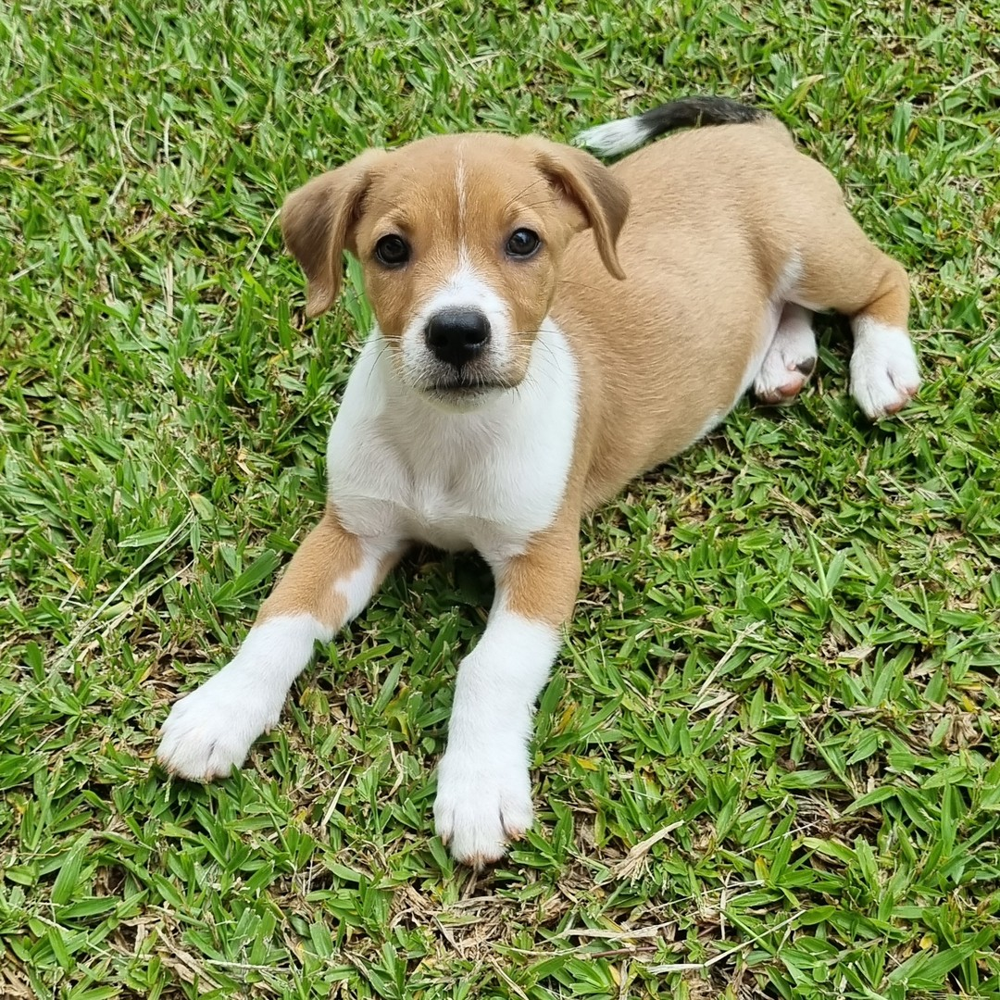
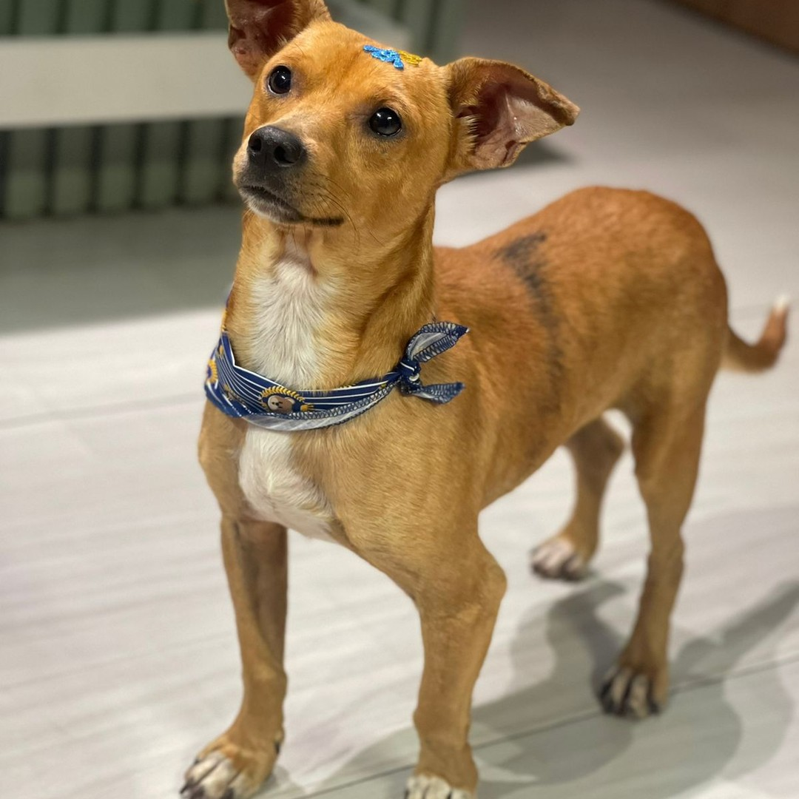
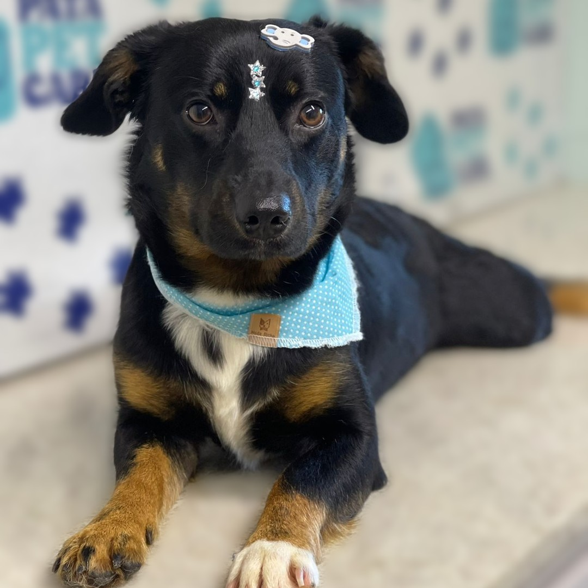
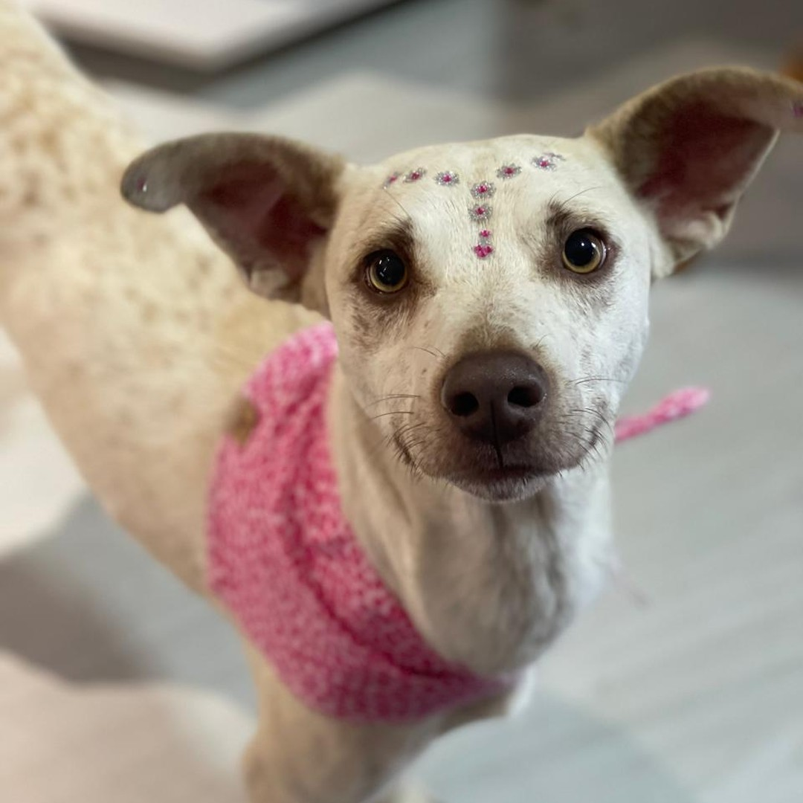
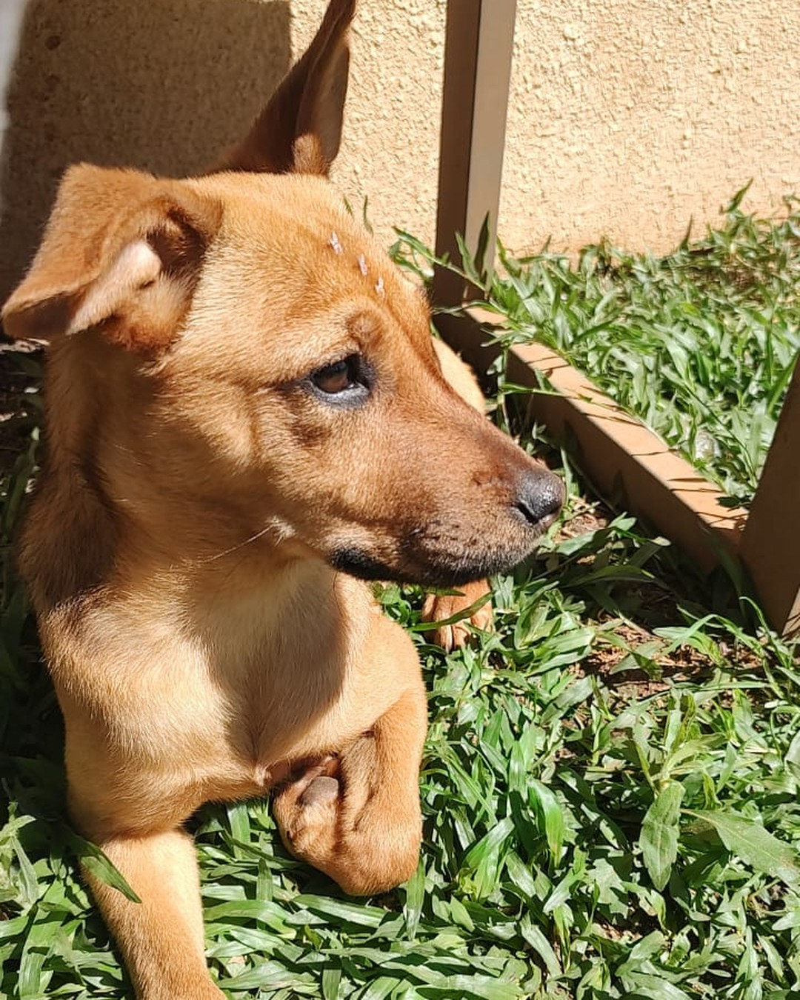
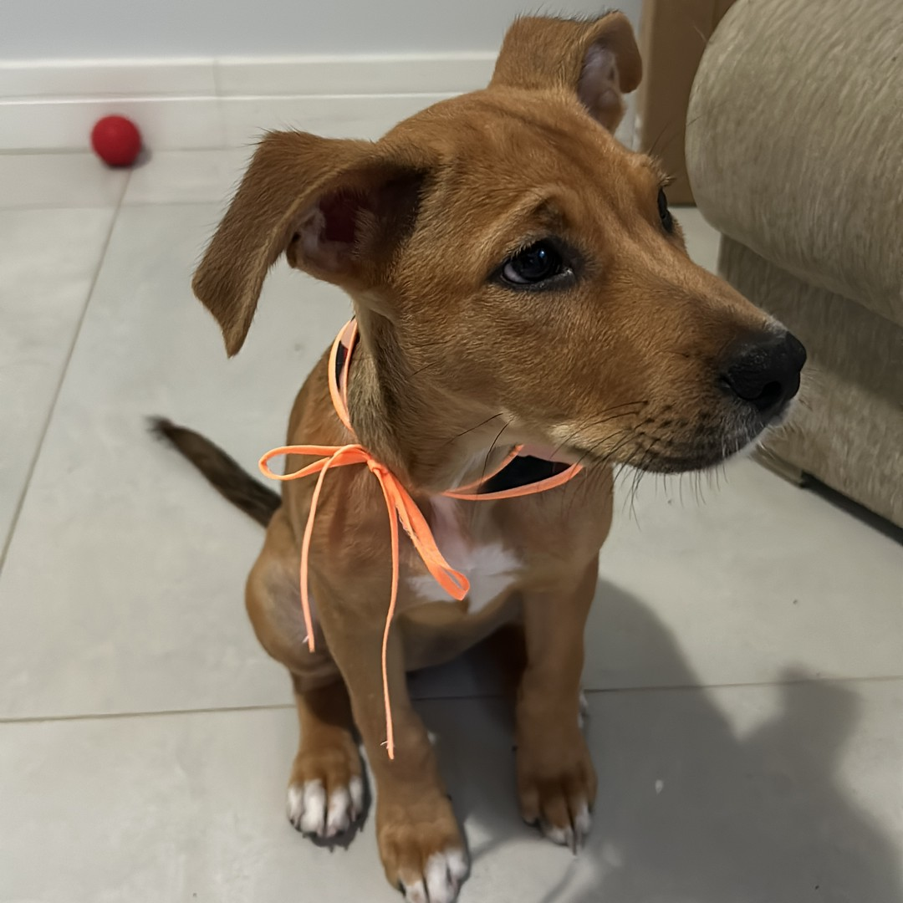

Lar temporário
· 1 de 6

Theodor
o TT
hoje: Churros
O primeiro. Chegou bem filhotinho e aprendeu tudo no tapetinho. Ficou menos de um mês.
Churros! que nome bom
via @pataviralata
Lar temporário
· 2 de 6

Rocco
hoje: continua Rocco
Tinha por volta de um ano e nunca fez nada dentro de casa. Foi adotado em menos de um mês.
ele não gostava muito do Guilherme
via @pataviralata
Lar temporário
· 3 de 6

Heitor
hoje: adotado
Tinha por volta de um ano. Agitado, mas nunca agressivo. Foi adotado em menos de um mês.
se ainda é Heitor, ninguém sabe
via @pataviralata
Lar temporário
· 4 de 6

Camélia
hoje: Lorna, irmã de gatos
A mais medrosa. Veio com os filhotes dela e outra mãezinha com filhotes: todos adotados.
a família veio conhecer num domingo… e ela já ficou
via @pataviralata
Lar temporário
· 5 de 6

Mocca
hoje: adotada
Na ONG ela era Eva. Aqui aprendeu o tapetinho e os comandos, e ficou um ou dois meses.
Eva? não combinava
via @pataviralata
Lar temporário
· 6 de 6

Mia
hoje: Tequila
Chegou com uns 45 dias, a primeira no apartamento novo. Aprendeu os comandos rapidinho.
e depois dela… cheguei eu
via @projetosocialventosdosul